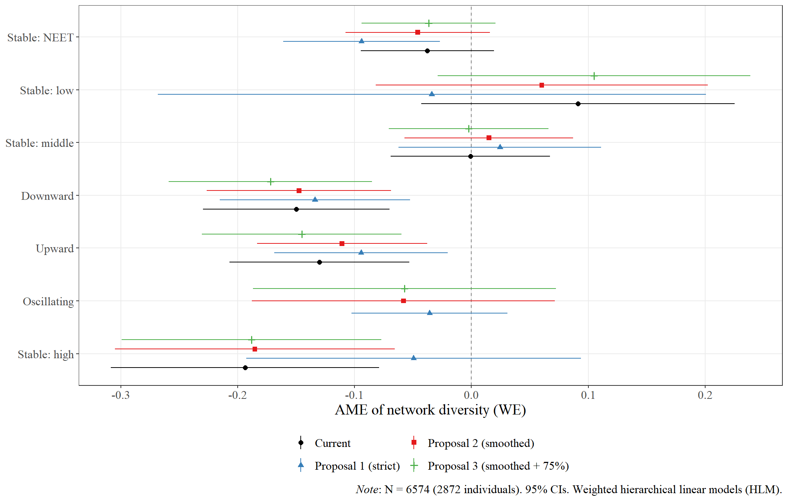

set1 <- RColorBrewer::brewer.pal(n = 8, name = "Set1")
options(ggplot2.discrete.fill = set1)
options(ggplot2.discrete.colour = set1)
ggplot2::theme_set(ggplot2::theme_bw())
ggplot2::theme_update(text = ggplot2::element_text(size = 15, family = "serif"))
options(scipen = 999)
if (!require("pacman")) install.packages("pacman")
pacman::p_load(dplyr, tidyr, lme4, ggplot2, ggtext, scales)Oscillating mobility trajectories (proposal, Study 2)
Setup
Purpose
mobility_cat_adj_isco3 classifies respondents only by their first and last observed occupational position. Respondents who move back and forth between positions are classified as Upward, Downward, or Stable depending on where the sequence happens to start and end. This document reviews how the variable is built and proposes alternatives with an Oscillating category.
How mobility_cat_adj_isco3 is built now
In 00-main_analysis.Rmd (section Mobility profiles, ISCO08 alternative A):
- Position in each wave.
isco03_neetis recoded as 1 NEET, 2 low, 3 middle, 4 high. Missing occupation (NA) is coded as NEET. Occupation is observed in 2016, 2018, 2021, and 2023. - First and last position. The trajectory compares the first and the last observed position. Equal positions give Stable. A higher last position gives Upward. A lower last position gives Downward. Everything in between is ignored.
- 75% rule. Respondents with at least 3 observations who spent 75% or more of their observations in one position, and who are classified as mobile, are reclassified as stable in that position.
This construction has three problems.
- Oscillations are hidden. A sequence such as M-H-M-H is classified as Upward (M to H). N-M-N-M is Upward (NEET to Any). M-N-M-M is Stable: middle, although the respondent left employment for one wave.
- The 75% rule is applied asymmetrically. The vector
mobility_categorieslists"Upward (L - H)","Upward (L - M)", and"Upward (M - H)", but the categories are labeled"Upward (L to H)","Upward (L to M)", and"Upward (M to H)". The rule therefore never applies to upward mobility between occupations, while it does apply to all downward categories and to Upward (NEET to Any). For example, H-H-H-M becomes Stable: high, but M-H-H-H stays Upward. - With 3 observations the rule never applies. With 3 observations, 75% means all 3 in the same position, so first and last are already equal. In practice the rule only reclassifies respondents observed in all 4 waves whose single deviating wave is the first or the last one.
Step 1. Data and analytical sample
df1 is the panel saved in 00-main_analysis.Rmd before na.omit(). The trajectories are built with all waves in df1 (as in the paper), and the analytical sample (6,574 observations, 2,872 individuals) is used for the tables and the models.
load(here::here("input/data/proc/df1_panel_for_mice.RData")) # df1
df1 <- as.data.frame(df1)
militares <- df1 %>% filter(isco08_1lvl == "0000") %>% pull(id) %>% unique()
vars_paper <- c("id", "time",
"market", "just_educ", "just_salud", "just_pension",
"n_total", "isei_avg", "entropy_contacts", "know_total", "crossclass", "strong_tie",
"sex", "age", "parenteducw1", "migrationw1", "isco_father", "partner",
"isei_c", "isco03_neet",
"mobility_cat_adj_isco3", "mobility_cat_unadj", "mobility_cat_adj_isco3b",
"mobility_cat_adj_isco3c", "mobility_cat_adj_isco3d", "mobility_cat_adj_egp3", "moves",
"ponderador02", "weights1", "atricion")
an <- df1 %>% filter(!id %in% militares) %>% select(all_of(vars_paper)) %>% na.omit() %>% as.data.frame()
stopifnot(nrow(an) == 6574, n_distinct(an$id) == 2872)Step 2. Observed sequences
Each respondent’s sequence of positions is written as a string (N = NEET, L = low, M = middle, H = high), in the same coding used for the trajectories. A reversal is a change of direction: a move up followed by a move down, or the reverse.
lab <- c("N", "L", "M", "H")
df1$mob_t <- as.numeric(car::recode(as.numeric(df1$isco03_neet), "c(4,NA)=0")) + 1
recode_profile <- function(x) suppressWarnings(car::recode(as.character(x),
"c('Downward (Any to NEET)','Downward (H to L)','Downward (H to M)','Downward (M to L)')='Downward';
c('Upward (L to H)','Upward (L to M)','Upward (M to H)','Upward (NEET to Any)')='Upward'"))
n_reversals <- function(v) { d <- sign(diff(v)); d <- d[d != 0]; sum(diff(d) != 0) }
n_moves <- function(v) sum(diff(v) != 0)
seqs <- df1 %>%
filter(id %in% an$id) %>%
arrange(id, ola) %>%
group_by(id) %>%
summarise(seq = paste(lab[mob_t], collapse = "-"),
n_waves = n(),
moves = n_moves(mob_t),
reversals = n_reversals(mob_t),
current = recode_profile(first(mobility_cat_adj_isco3)),
current_detail = as.character(first(mobility_cat_adj_isco3)),
.groups = "drop")
# Current trajectory by number of reversals (persons)
addmargins(table(current = seqs$current, reversals = pmin(seqs$reversals, 2))) reversals
current 0 1 2 Sum
Downward 271 54 24 349
Stable: high 268 47 0 315
Stable: low 91 31 2 124
Stable: middle 640 129 6 775
Stable: NEET 796 112 0 908
Upward 300 63 38 401
Sum 2366 436 70 2872# "Stable" respondents whose position changed at some point
seqs %>% filter(grepl("Stable", current)) %>%
group_by(current) %>% summarise(n = n(), with_changes = sum(moves > 0), share = round(mean(moves > 0), 3))| current | n | with_changes | share |
|---|---|---|---|
| Stable: NEET | 908 | 208 | 0.229 |
| Stable: high | 315 | 69 | 0.219 |
| Stable: low | 124 | 57 | 0.460 |
| Stable: middle | 775 | 210 | 0.271 |
# Most frequent sequences with a reversal
head(sort(table(paste0(seqs$current, ": ", seqs$seq)[seqs$reversals > 0]), decreasing = TRUE), 20)
Stable: NEET: N-M-N-N Stable: middle: M-N-M-M Stable: middle: M-M-N-M
22 21 19
Stable: NEET: N-N-M-N Stable: NEET: N-L-N-N Stable: middle: M-H-M-M
17 15 14
Stable: NEET: N-M-N Stable: middle: M-M-H-M Stable: high: H-M-H-H
14 11 10
Stable: middle: M-H-M Stable: middle: M-L-M Stable: NEET: N-N-L-N
10 10 10
Upward: M-H-M-H Stable: middle: M-N-M Stable: NEET: N-M-M-N
10 9 9
Stable: middle: M-L-M-M Stable: middle: M-N-N-M Stable: high: H-H-M-H
8 8 7
Stable: high: H-N-H Stable: low: L-L-M-L
7 7 The label mismatch in the 75% rule
mobility_categories <- c("Downward (Any to NEET)", "Downward (H to L)", "Downward (H to M)", "Downward (M to L)",
"Upward (L - H)", "Upward (L - M)", "Upward (M - H)", "Upward (NEET to Any)")
# Labels in the rule that do not exist in the data
setdiff(mobility_categories, unique(as.character(df1$mobility_cat_unadj)))[1] "Upward (L - H)" "Upward (L - M)" "Upward (M - H)"# Upward respondents between occupations who would be reclassified with the correct labels
share_max <- function(s) { v <- strsplit(s, "-")[[1]]; max(table(v)) / length(v) }
seqs$share_max <- sapply(seqs$seq, share_max)
missed <- seqs %>% filter(grepl("^Upward \\((L|M) to", current_detail), n_waves >= 3, share_max >= 0.75)
table(missed$current_detail, missed$seq)
L-H-H-H L-L-L-M L-M-M-M M-H-H-H M-M-M-H
Upward (L to H) 2 0 0 0 0
Upward (L to M) 0 5 4 0 0
Upward (M to H) 0 0 0 12 19Step 3. Proposed classifications
All proposals use the full sequence instead of only the first and last positions.
- Stable. The position never changes. The stable category is the observed position.
- Upward. At least one change, and all changes go up (for example L-M-M-H or N-N-L).
- Downward. At least one change, and all changes go down.
- Oscillating. At least one reversal (for example M-H-M, N-M-N-M, L-M-N-N).
The proposals differ in how they treat short deviations.
- Proposal 1 (strict). Every change counts. Any reversal makes the trajectory Oscillating, including a single-wave deviation such as M-N-M-M.
- Proposal 2 (isolated deviations smoothed, recommended). A single interior wave that differs from both neighbors, when the neighbors are equal (M-N-M-M, H-M-H-H), is treated as a transitory deviation and replaced by the neighbors’ position before classifying. This applies only when the sequence has a single such deviation. Alternating sequences (M-H-M-H, N-M-N-M) have two and remain Oscillating. This rule replaces the 75% rule. It is symmetric, and it does not depend on whether the deviation is up or down. Changes in the first or last wave are not smoothed, because the sequence does not show whether they are transitory.
- Proposal 3 (Proposal 2 + 75% rule, corrected). Same as Proposal 2, but the 75% rule is also applied, with correct labels, to Upward and Downward respondents observed in 4 waves. The shares are computed on the observed sequence, not the smoothed one. This keeps the logic of the paper (a single deviation in the first or last wave counts as stable) and adds the Oscillating category. Oscillating respondents are not affected by the rule.
classify <- function(v) {
d <- sign(diff(v)); d <- d[d != 0]
if (length(d) == 0) return(paste0("Stable: ", c("NEET", "low", "middle", "high")[v[1]]))
if (all(d > 0)) return("Upward")
if (all(d < 0)) return("Downward")
"Oscillating"
}
# Interior single-wave deviations (neighbors equal, the wave differs), detected on the original sequence
blips <- function(v) {
n <- length(v); if (n < 3) return(integer(0))
which(sapply(2:(n - 1), function(i) v[i - 1] == v[i + 1] && v[i] != v[i - 1])) + 1
}
smooth_one <- function(v) { b <- blips(v); if (length(b) == 1) v[b] <- v[b - 1]; v }
rule75 <- function(v, cls) {
if (!cls %in% c("Upward", "Downward") || length(v) < 4) return(cls)
tb <- table(v); if (max(tb) / length(v) >= 0.75)
return(paste0("Stable: ", c("NEET", "low", "middle", "high")[as.numeric(names(which.max(tb)))]))
cls
}
to_vec <- function(s) match(strsplit(s, "-")[[1]], lab)
seqs <- seqs %>% mutate(
seq_smooth = sapply(seq, function(s) paste(lab[smooth_one(to_vec(s))], collapse = "-")),
prop1 = sapply(seq, function(s) classify(to_vec(s))),
prop2 = sapply(seq_smooth, function(s) classify(to_vec(s))),
prop3 = mapply(function(s, c) rule75(to_vec(s), c), seq, prop2, USE.NAMES = FALSE)) # shares from the observed sequence
lv <- c("Stable: NEET", "Stable: low", "Stable: middle", "Stable: high", "Upward", "Downward", "Oscillating")
for (v in c("current", "prop1", "prop2", "prop3")) seqs[[v]] <- factor(seqs[[v]], levels = lv)
# Persons per category
sapply(seqs[, c("current", "prop1", "prop2", "prop3")], table) current prop1 prop2 prop3
Stable: NEET 908 700 793 889
Stable: low 124 67 93 122
Stable: middle 775 565 674 772
Stable: high 315 246 282 318
Upward 401 373 397 282
Downward 349 415 430 286
Oscillating 0 506 203 203How respondents move between the current classification and the proposals
addmargins(table(current = seqs$current, proposal1 = seqs$prop1)) proposal1
current Stable: NEET Stable: low Stable: middle Stable: high Upward
Stable: NEET 700 0 0 0 42
Stable: low 0 67 0 0 5
Stable: middle 0 0 565 0 20
Stable: high 0 0 0 246 6
Upward 0 0 0 0 300
Downward 0 0 0 0 0
Oscillating 0 0 0 0 0
Sum 700 67 565 246 373
proposal1
current Downward Oscillating Sum
Stable: NEET 54 112 908
Stable: low 19 33 124
Stable: middle 55 135 775
Stable: high 16 47 315
Upward 0 101 401
Downward 271 78 349
Oscillating 0 0 0
Sum 415 506 2872addmargins(table(current = seqs$current, proposal2 = seqs$prop2)) proposal2
current Stable: NEET Stable: low Stable: middle Stable: high Upward
Stable: NEET 793 0 0 0 42
Stable: low 0 93 0 0 5
Stable: middle 0 0 674 0 20
Stable: high 0 0 0 282 6
Upward 0 0 0 0 324
Downward 0 0 0 0 0
Oscillating 0 0 0 0 0
Sum 793 93 674 282 397
proposal2
current Downward Oscillating Sum
Stable: NEET 54 19 908
Stable: low 19 7 124
Stable: middle 55 26 775
Stable: high 16 11 315
Upward 0 77 401
Downward 286 63 349
Oscillating 0 0 0
Sum 430 203 2872addmargins(table(current = seqs$current, proposal3 = seqs$prop3)) proposal3
current Stable: NEET Stable: low Stable: middle Stable: high Upward
Stable: NEET 889 0 0 0 0
Stable: low 0 117 0 0 0
Stable: middle 0 0 749 0 0
Stable: high 0 0 0 304 0
Upward 0 5 23 14 282
Downward 0 0 0 0 0
Oscillating 0 0 0 0 0
Sum 889 122 772 318 282
proposal3
current Downward Oscillating Sum
Stable: NEET 0 19 908
Stable: low 0 7 124
Stable: middle 0 26 775
Stable: high 0 11 315
Upward 0 77 401
Downward 286 63 349
Oscillating 0 0 0
Sum 286 203 2872Who oscillates (Proposal 2)
osc <- seqs %>% filter(prop2 == "Oscillating")
# Most oscillations involve moving in and out of employment (NEET)
table(involves_NEET = grepl("N", osc$seq_smooth))involves_NEET
FALSE TRUE
39 164 head(sort(table(osc$seq_smooth), decreasing = TRUE), 20)
M-H-M-H N-M-M-N M-N-N-M M-M-N-H N-M-N-M H-M-M-H L-M-N-N M-H-H-M M-M-N-L M-H-N-N
10 9 8 7 7 6 6 6 6 5
M-N-H M-N-M-N N-H-M-M L-N-M-M L-N-N-L M-H-N M-L-M-L M-M-H-N N-H-H-M N-L-N-L
5 5 5 4 4 4 4 4 4 4 # Net direction between the first and the last position (-1 down, 0 none, 1 up)
table(net = sign(sapply(osc$seq_smooth, function(s) { v <- to_vec(s); v[length(v)] - v[1] })))net
-1 0 1
63 63 77 # Smoothed deviations, most frequent
sm <- seqs %>% filter(seq != seq_smooth)
nrow(sm)[1] 303head(sort(table(paste(sm$seq, "->", sm$seq_smooth)), decreasing = TRUE), 15)
N-M-N-N -> N-N-N-N M-N-M-M -> M-M-M-M M-M-N-M -> M-M-M-M N-N-M-N -> N-N-N-N
22 21 19 17
N-L-N-N -> N-N-N-N M-H-M-M -> M-M-M-M N-M-N -> N-N-N M-M-H-M -> M-M-M-M
15 14 14 11
H-M-H-H -> H-H-H-H M-H-M -> M-M-M M-L-M -> M-M-M N-N-L-N -> N-N-N-N
10 10 10 10
M-N-M -> M-M-M M-L-M-M -> M-M-M-M H-H-M-H -> H-H-H-H
9 8 7 Step 4. Consequences for the main model
The paper’s interaction model (Table S4, weighted hybrid random intercept model) is re-estimated with each classification. Stable: low is the reference in all models. The AME of diversity (WE) in each group is computed as a linear combination of coefficients (delta method).
an <- an %>% left_join(seqs %>% select(id, current, prop1, prop2, prop3), by = "id")
pca <- psych::pca(r = an %>% select(entropy_contacts, know_total, crossclass), nfactors = 1, rotate = "oblimin",
scores = TRUE, missing = TRUE, cor = "cor", weight = an$ponderador02)
an$diversityclass <- as.numeric(pca$scores)
an$parenteducw1 <- factor(an$parenteducw1, ordered = FALSE)
an$migrationw1 <- factor(an$migrationw1, ordered = FALSE)
an$time <- factor(car::recode(an$time, "3=2;7=3"))
an$market1 <- as.numeric(scale(an$market))
an$diversityclass_gm <- ave(an$diversityclass, an$id, FUN = mean)
an$partner_gm <- ave(an$partner, an$id, FUN = mean)
an$diversityclass_gc <- an$diversityclass - an$diversityclass_gm
fit_traj <- function(var) {
d <- an; d$traj <- relevel(droplevels(d[[var]]), ref = "Stable: low")
lmer(market1 ~ diversityclass_gc*traj + diversityclass_gm + sex + age + parenteducw1 + migrationw1 +
partner + partner_gm + time + (1|id), data = d, weights = weights1)
}
mods <- lapply(c(current = "current", prop1 = "prop1", prop2 = "prop2", prop3 = "prop3"), fit_traj)
# Check: the current classification reproduces Table S4
round(fixef(mods$current)[c("diversityclass_gc", "diversityclass_gc:trajStable: high")], 3) diversityclass_gc diversityclass_gc:trajStable: high
0.091 -0.285 ame_lc <- function(m, w) {
b <- fixef(m); V <- as.matrix(vcov(m))
L <- setNames(rep(0, length(b)), names(b)); L[names(w)] <- unlist(w)
est <- sum(L * b); se <- sqrt(drop(t(L) %*% V %*% L))
data.frame(AME = est, SE = se, lo = est - 1.96 * se, hi = est + 1.96 * se, p = 2 * pnorm(-abs(est / se)))
}
ame_traj <- function(m) {
groups <- sub("^diversityclass_gc:traj", "", grep("^diversityclass_gc:traj", names(fixef(m)), value = TRUE))
do.call(rbind, lapply(c("Stable: low", groups), function(k) {
w <- list(diversityclass_gc = 1)
if (k != "Stable: low") w[[paste0("diversityclass_gc:traj", k)]] <- 1
cbind(trajectory = k, ame_lc(m, w))
}))
}
labels <- c(current = "Current", prop1 = "Proposal 1 (strict)",
prop2 = "Proposal 2 (smoothed)", prop3 = "Proposal 3 (smoothed + 75%)")
ame_all <- bind_rows(lapply(names(mods), function(k) cbind(classification = labels[[k]], ame_traj(mods[[k]]))))
ame_all$trajectory <- factor(ame_all$trajectory, levels = rev(c("Stable: NEET", "Stable: low", "Stable: middle",
"Downward", "Upward", "Oscillating", "Stable: high")))
ame_all$classification <- factor(ame_all$classification, levels = labels)
ame_all %>%
mutate(cell = paste0(sprintf("%.3f", AME), ifelse(p < 0.001, "***", ifelse(p < 0.01, "**", ifelse(p < 0.05, "*", ifelse(p < 0.1, "+", "")))))) %>%
select(trajectory, classification, cell) %>%
pivot_wider(names_from = classification, values_from = cell) %>%
arrange(desc(trajectory))| trajectory | Current | Proposal 1 (strict) | Proposal 2 (smoothed) | Proposal 3 (smoothed + 75%) |
|---|---|---|---|---|
| Stable: NEET | -0.038 | -0.094** | -0.046 | -0.037 |
| Stable: low | 0.091 | -0.034 | 0.060 | 0.105 |
| Stable: middle | -0.001 | 0.024 | 0.015 | -0.002 |
| Downward | -0.150*** | -0.134** | -0.148*** | -0.172*** |
| Upward | -0.130*** | -0.094* | -0.111** | -0.145*** |
| Oscillating | NA | -0.036 | -0.058 | -0.057 |
| Stable: high | -0.194*** | -0.050 | -0.185** | -0.188*** |
# Persons per group in the model sample
sapply(an[!duplicated(an$id), c("current", "prop1", "prop2", "prop3")], table) current prop1 prop2 prop3
Stable: NEET 908 700 793 889
Stable: low 124 67 93 122
Stable: middle 775 565 674 772
Stable: high 315 246 282 318
Upward 401 373 397 282
Downward 349 415 430 286
Oscillating 0 506 203 203ggplot(ame_all, aes(x = trajectory, y = AME, color = classification, shape = classification)) +
geom_hline(yintercept = 0, linetype = "dashed", color = "grey50") +
geom_pointrange(aes(ymin = lo, ymax = hi), position = position_dodge(width = 0.7), size = 0.4) +
scale_color_manual(values = c("black", set1[2], set1[1], set1[3])) +
coord_flip() +
labs(x = NULL, y = "AME of network diversity (WE)", color = NULL, shape = NULL,
caption = paste0("*Note*: N = ", nobs(mods$current), " (", ngrps(mods$current)[["id"]],
" individuals). 95% CIs. Weighted hierarchical linear models (HLM).")) +
guides(color = guide_legend(nrow = 2), shape = guide_legend(nrow = 2)) +
theme(plot.caption = element_markdown(hjust = 1, size = 12, family = "serif"),
legend.position = "bottom", panel.grid.minor = element_blank())
ggsave(plot = last_plot(), filename = "figureS_oscillation_ame.png", path = here::here("output/images"),
width = 1.5, height = 1, scale = 15, device = "png", units = "cm", dpi = "retina")